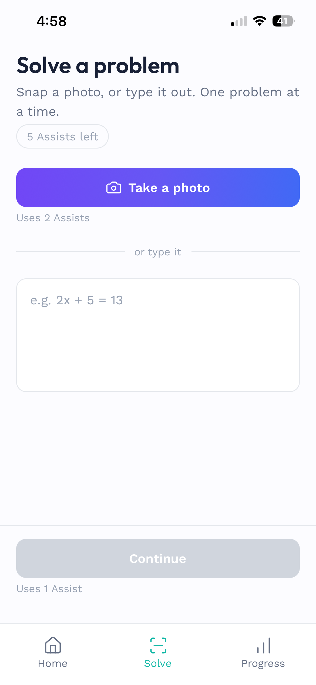
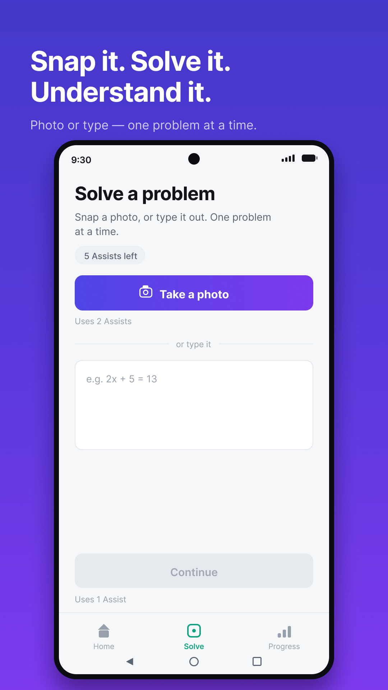
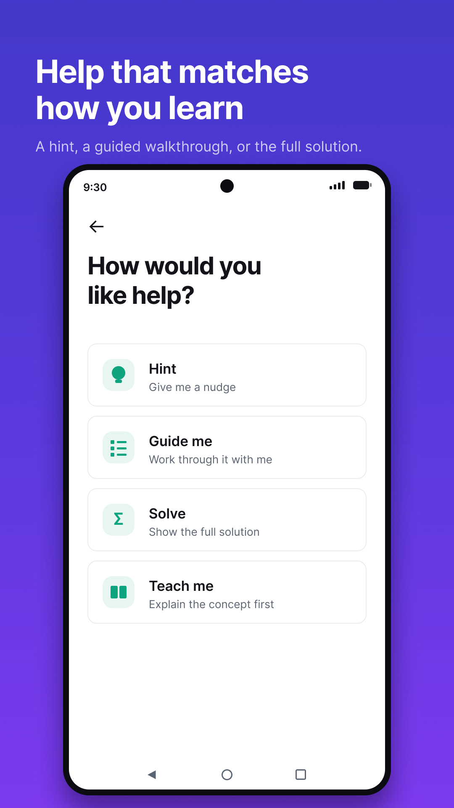
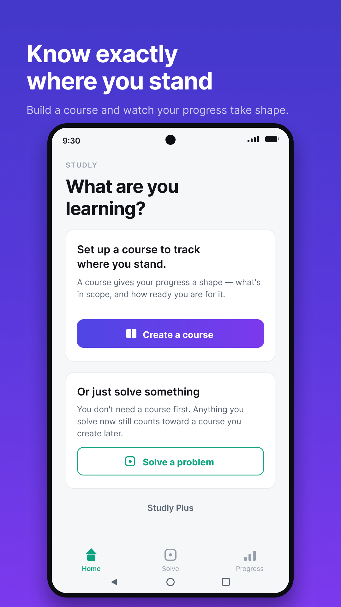

1
Capture the problem
Take a photo, upload an image, or type your question. Before it answers, Studly shows you what it read — so a misread digit gets caught before it becomes a wrong answer.
Products Studly
Your AI math learning companionTake a photo of any math problem and Studly guides you through the solution, explains the reasoning, and helps you practise until the concept truly makes sense — one problem at a time.
For students 13+, from middle school through college.

Most math-solving tools stop once they show you the answer. Studly goes further — it breaks down the reasoning, names the concept, and helps you practise what you have learned.
Take a photo, upload an image, or type your question. Before it answers, Studly shows you what it read — so a misread digit gets caught before it becomes a wrong answer.
Studly explains the solution step by step and highlights the formulas, rules, and concepts in play — and where the maths can be checked, it verifies the answer with a symbolic engine.
Try a similar question, show your own working for feedback, and watch each topic move toward "strong" as the evidence builds.
Snap it or type it. Studly reads the problem, shows you what it read, and returns a structured, easy-to-follow explanation — one problem at a time.
See how every step connects. Studly explains the reasoning behind each transformation instead of jumping straight to the answer.
Where the maths can be checked, Studly re-computes it with a symbolic engine — not by asking the same AI twice. When something can't be verified, it says so.
You choose how much help you want — Hint, Guide me, Solve, or Teach me the concept first. Asking for the full solution is never treated as cheating.
Photograph the steps you wrote yourself. Studly checks each one and tells you which step went wrong — not just that the final answer was.
Reinforce a concept while it's fresh. Studly generates similar questions based on the topic and difficulty of the problem you just worked through.



Studly encourages you to attempt the problem, show your reasoning, and learn from mistakes. The goal isn't to finish homework faster — it's to make you a more confident, independent problem-solver.
Ask Studly to simplify the explanation, use another method, or teach the concept before the problem.
See exactly where your solution changed direction — and understand how to correct it.
Practise a similar question immediately to lock the concept in while it's fresh.
Studly builds a picture of what you know from what you actually do. Topics move between needs work, developing, and strong based on evidence — earn XP as you go, and when there isn't enough evidence yet, Studly says so instead of inventing a score.
No progress number it hasn't earned the right to show you.
Whether you're reviewing the basics, preparing for an exam, or working through advanced mathematics, Studly adapts the explanation to your level.
“I don't understand how they got that answer.”
Studly explains the missing reasoning between each step, so the jump finally makes sense.
“I know I made a mistake, but I can't find it.”
Studly reviews your method and points to the exact step where the solution changed direction.
“I get the example, but I need more practice.”
Studly creates similar questions so you can reinforce the concept right away.
For students who want to explore Studly.
For students who want to learn without interruptions.
No passwords — sign in with Apple, Google, or a one-time email code. Subscription limits and features may be adjusted as Studly continues to improve; current pricing is shown on the in-app paywall.
It isn't an answer engine
with a subscription attached.
Studly won't pretend a correct answer means you understood something, and it won't show you a progress number it hasn't earned. It's a learning companion — built to support your classroom, your independent study, and your practice, not to replace a teacher.
Studly is coming to the App Store and Google Play. These links go live at launch.
Want to know the moment it lands?